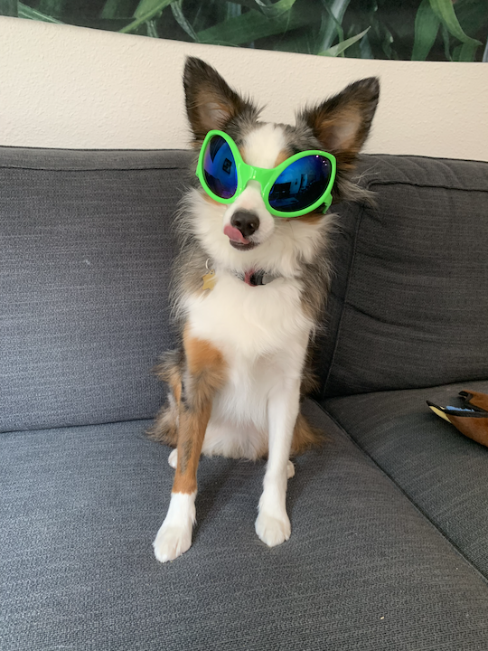

Fun Stuff
Pablo
This is my family's dog, Pablo. He's a Mini Australian Shepard, is five years old and from Austin, Texas. Pablo is a cat in a dog's body. He isn't interested in other dogs and acts aloof around other people. His main interests are bacon, cheese, and chasing the rabbits around chipmunks that wander into our yard. Pablo considers my Mom to be his "person" and when she leaves him he retreats to his perch on a chair overlooking the driveway.
Hobbies
I enjoy hiking, running, and skiing. Last year I dipped my toes into ski racing by participating in the 17 mile Kortelopet. This year I'm upgrading to the 30 mile Birkebeiner. Otherwise I really like cooking, baking, and playing board and card games with friends.